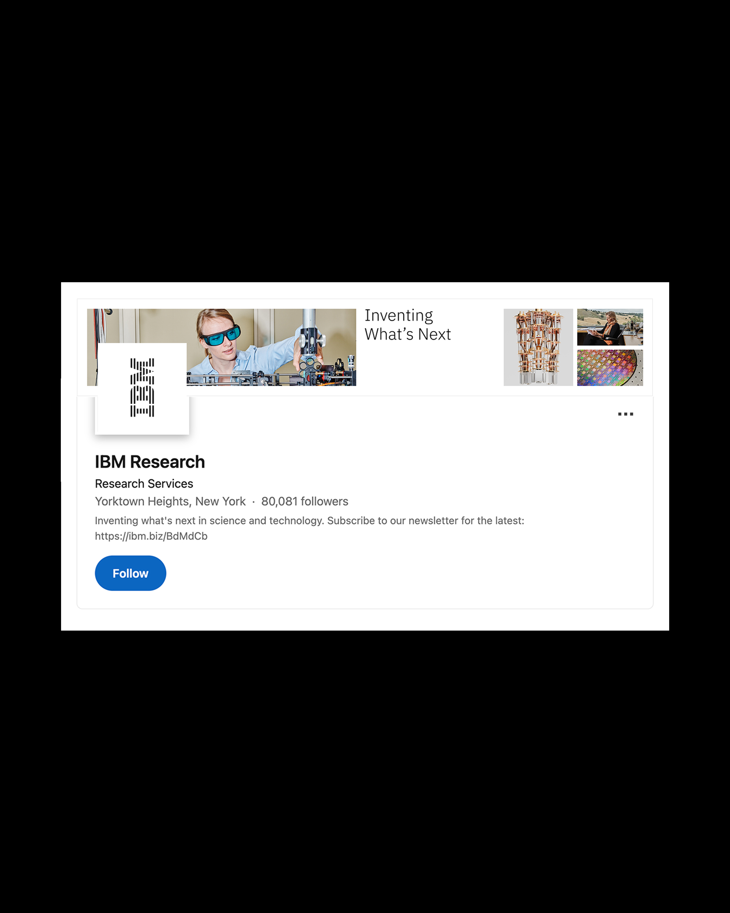
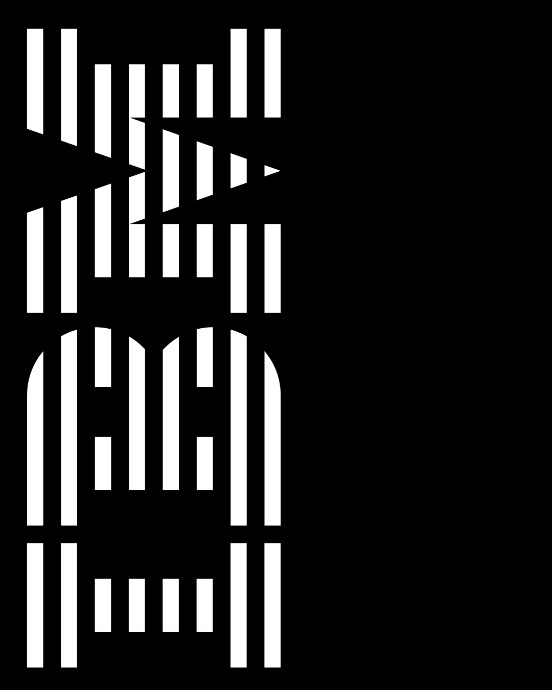
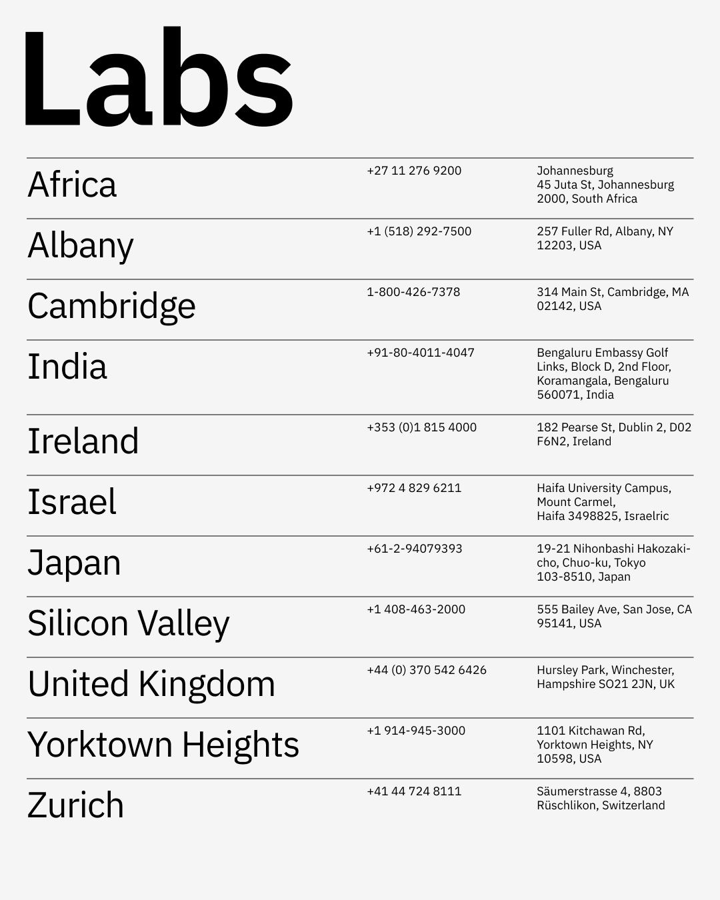
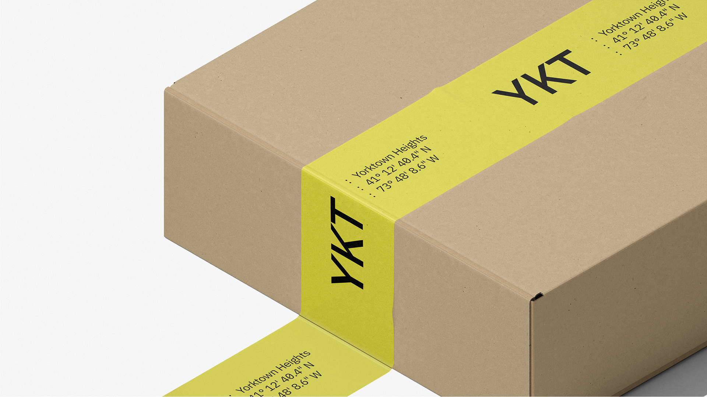
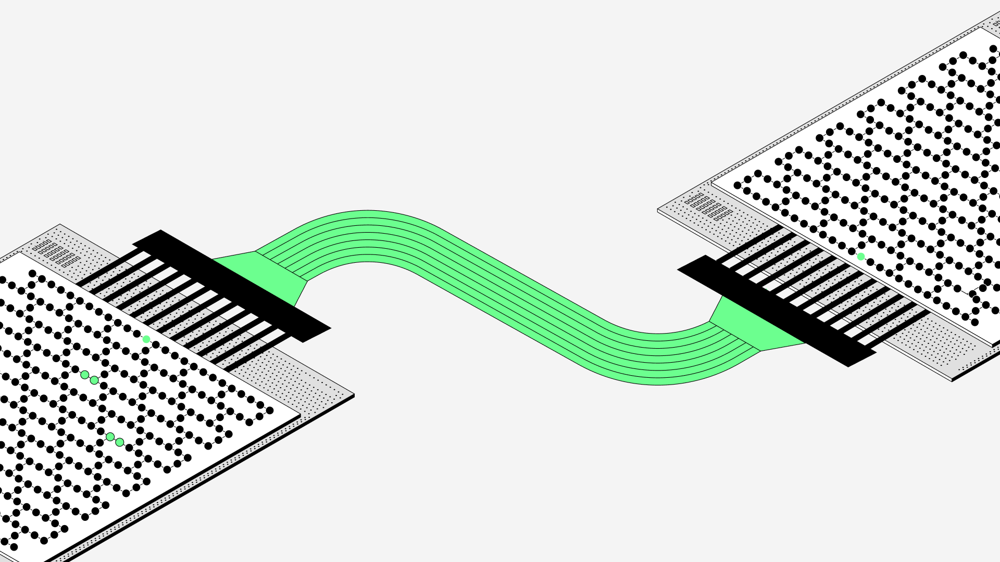
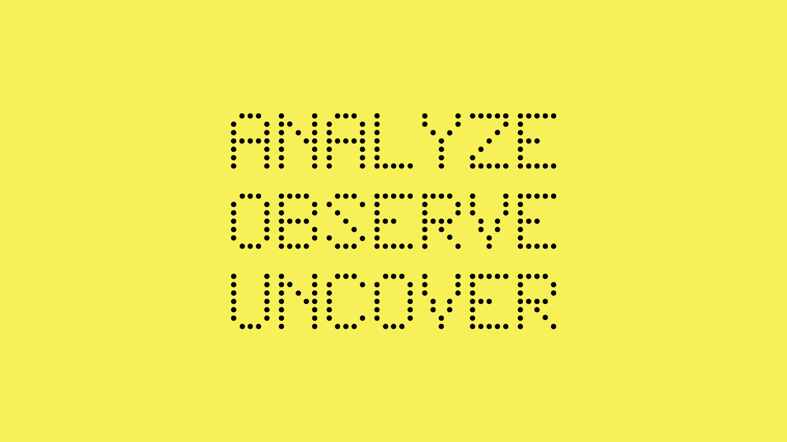
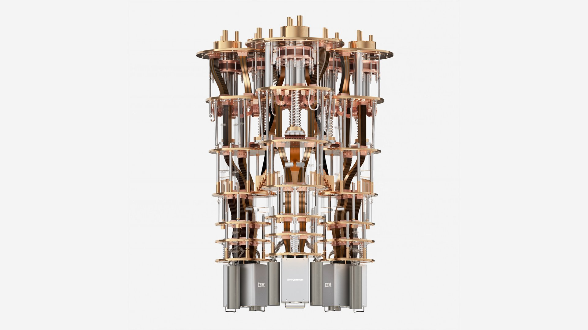

IBM Research
Team
Alex Lukin, Bethany Douglas, David Bryant, Diem Nyugen, Jason Lynch, Josh Totte, Kim Martineau, Mark Poldaseck, Mike Murphy, Peter Hess, Ryan Mellody, Susana Rodriguez de Tembleque, Terris Poole
The future of computing is now. IBM Research is the research and development division of IBM, focusing on breakthrough science, mathematics, and computing technologies. The in-house design team presents research through a technical and sensible design lens. As such, the output of design work diverges from IBM's conventional corporate visual branding, creating room for greater experimentation.
Graphics
Graphic design at IBM Research spans print and digital media. From posters and postcards celebrating technical achievements to social assets that amplify research discoveries, these graphics play an important role in amplifying the work at Research and is regularly shared by leadership across the organization.





IBM Research Website
The IBM Research website underwent a complete redesign to introduce the new Research brand, bringing structural UI changes alongside a refreshed visual identity. Beyond a visual reskin, the redesign responds to how people discover, consume, and interact with information in this AI era. A key priority is surfacing high-quality blog content, so visitors can discover IBM Research through search and engage with a more intuitive, user-friendly website.
Art
Visuals for the blog, website, and, occasionally, scientific journals are carefully crafted and, in my practice, created without AI. The unique challenge lies in understanding the subject at a technical level while translating it into visuals that move beyond being purely literal. Experimental image-making is encouraged.


IBM Research Brand Evolution
Launched alongside a leadership transition, the IBM Research rebrand went through a refresh. High-contrast colors moved beyond the muted, blue-focused palette. New takes on the color palette were inspired by lab space. Tighter typographic systems strengthened visual type relations and clearly defined illustration categories ranged from experimental to real visuals in research papers. Together, these elements brought a new dynamism to the brand.






Set Design
Circuit Breaker is IBM Research's weekly news recap, keeping researchers informed about the latest developments across the organization. Previously filmed against a green screen, the segment's production quality fell short of the team's standards. With a small budget and a proposal for a new direction, the production moved to a fully designed set. The proposed visual assets span from Photoshop collages, mood boards, and 3D-modeled concepts, each drawing inspiration from the building's interior space.